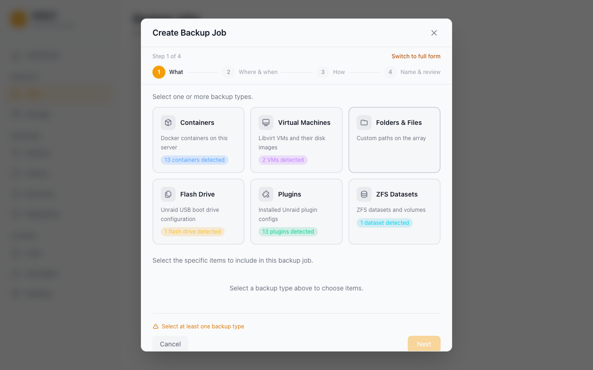

Backup Jobs¶
A backup job defines what to back up, where to put it, when to run, and how many copies to keep. This guide explains every option in the job wizard.
Creating a Job¶
Go to Jobs → Create Job. The wizard has four steps.

Step 1 — What¶
Pick which items to include in this job. Vault discovers items automatically from your server:
| Category | What's included |
|---|---|
| Containers | Docker containers (image, XML template, and all mapped appdata volumes); per-container path excludes |
| Virtual Machines | libvirt VMs (live snapshot or cold backup depending on running state); NVRAM preserved |
| ZFS datasets | Native zfs send/receive with snapshot management |
| Folders | Any arbitrary path on your server (e.g. /mnt/user/appdata, /boot/config) |
| Plugins | Installed Unraid plugins |
Notes on containers¶
- Vault backs up the container image, its XML template, and all host paths mapped into the container.
- Special files (Unix sockets, device nodes, named pipes) are skipped automatically — they cannot be archived and their presence does not fail the backup.
- Tailscale-enabled containers are fully supported.
- Bind-mounts that point at the host root (
/→/rootfs, used by Glances, Telegraf, Netdata, cAdvisor, node-exporter) are detected and skipped without walking the host filesystem.
Container database dumps¶
For containers Vault recognises as a database (PostgreSQL, MySQL, MariaDB), a
job can capture a logical SQL dump alongside the volume archive. The dump is
a sidecar of the backup (database.sql, optionally .gz/.zst when the job
compresses) — it is not stored inside any restored volume.
On restore Vault decides whether to replay it automatically:
- Reloaded automatically when the backup recorded that the dump is the authoritative copy (the volumes were captured while the server was running, so the dump is the consistent snapshot). Vault waits for the database to become ready and replays the dump into the restored container.
- Left for you, not reloaded when the restored volume is the newer, consistent copy (the volumes were captured with the server stopped), when the container was not running, or when the database never became ready. Replaying in these cases would roll the database back to where the dump began, so Vault preserves the dump instead of applying it.
When the dump is not reloaded, Vault copies it out of its temporary staging
directory to a durable, discoverable location and reports the exact path in the
restore progress and logs (database dump saved to …):
- Custom destination — written to
<destination>/<container>-database.sql(with the job's.gz/.zstsuffix when compressed). - In place (no custom destination) — written beside the container's first
restored volume, for example
/mnt/user/appdata/<container>-database.sql.
The file name is prefixed with the container name so several containers
restored under a shared parent (such as /mnt/user/appdata) do not collide.
You can replay a preserved dump manually with your database's normal import
tool (for example mysql < database.sql or psql -f database.sql). This
behaviour is the same for classic and deduplicated backups.
Excluding container sub-paths¶
You can list paths to exclude from a container backup (e.g. /config/Library/Application Support/Plex Media Server/Cache or /config/Sonarr/MediaCover). The job wizard exposes a free-text list per container, and Vault ships a GET /api/v1/presets/exclusions catalogue of common rules for popular containers (Plex, Sonarr, Radarr, etc.) the UI offers as starting points. For some apps the response also carries advisory notes/warnings (e.g. the Immich database caveat below), which the wizard shows inline.
Backing up Immich¶
Immich detection works for both the official ghcr.io/immich-app/immich-server image (media root mounted at /data) and the imagegenius fork ghcr.io/imagegenius/immich (/photos). The recommended exclusions cover both layouts:
| Always backed up (critical) | Excluded (regeneratable) | |
|---|---|---|
Official (/data) |
upload, library, profile, backups |
thumbs, encoded-video |
imagegenius (/photos) |
upload, library, profile, backups |
thumbs, encoded-video |
Thumbnails and re-encoded video are re-created by Immich on demand after a restore, so excluding them saves space without data loss. The upload/library/profile folders hold your original photos and videos and are never excluded.
Immich's database is the catch: Immich stores every asset's metadata in a PostgreSQL database that runs in a separate container, so a filesystem backup of the Immich container does not capture it — and a raw file copy of the Postgres data directory is not crash-consistent. Choose one of:
- Recommended — Immich's built-in database backup. In Immich, go to Administration → Settings → Backup Settings and enable the database dump. Immich writes timestamped
.sql.gzdumps into thebackups/folder inside your media root (/data/backupsor/photos/backups), which Vault keeps. Backing up the media root then captures both your photos and a restorable database dump in one job. - Back up the Postgres container as its own Vault job. Add the Immich Postgres container to a separate job; Vault stops it before archiving, giving a consistent copy of its data directory.
- Dump via a pre-backup script. Vault runs a job's Pre-backup script before stopping any containers, with
VAULT_JOB_NAME,VAULT_STATUS,VAULT_JOB_ID, andVAULT_RUN_IDexported into its environment. A script candocker execapg_dumpinto the media root before the backup runs.
Notes on ZFS datasets¶
- Vault uses
zfs send(full) andzfs send -i(incremental) under the hood and manages the snapshot lifecycle itself. - Restoration goes through
zfs receive, preserving properties and child datasets. - The host
zfsbinary must be onPATH— true on any Unraid system with a ZFS pool.
Notes on folders¶
- You can back up
/mnt/user/appdatato get all container appdata in one shot without selecting individual containers. - Folder backups only wake the destination disk when writing — the source array is read sequentially.
Step 2 — Where & when¶
Select which storage destination this job will write to. If you have not added one yet, save the wizard and go to Storage first — see Storage Destinations. This step also sets the schedule.
Schedule¶
| Option | Description |
|---|---|
| Hourly | Runs at a fixed minute past every hour |
| Daily | Runs at a specific time each day |
| Weekly | Runs on selected days of the week at a specific time |
| Monthly | Runs on a specific day of the month (or First/Last day) at a specific time |
| Yearly | Runs on a specific month and day at a specific time |
| Custom (cron) | Any valid cron expression for advanced schedules |
"First day" and "Last day" of month: Instead of a fixed day number, you can choose First day of month or Last day of month. Last-day jobs fire correctly on months of any length (28, 29, 30, or 31 days).
Time format: The schedule UI uses your Unraid time format setting (12-hour or 24-hour) automatically.
Manual-only jobs: Leave the schedule empty to create a job that never runs on its own — you run it on demand with the Run Now button.
Step 3 — How¶
Choose the backup strategy and, under Advanced options, tune compression, retention, verification, and scripts.
Backup Types¶
| Type | What it backs up | Restore speed | Storage use |
|---|---|---|---|
| Full | Everything, every run | Fastest — single archive | Highest — full copy each time |
| Incremental | Changes since the last backup of any type | Slowest — may need to chain archives | Lowest |
| Differential | Changes since the last full backup | Medium — needs full + one diff | Medium |
First run of an Incremental or Differential job
On the very first run there is no parent backup to attach to, so an Incremental or Differential job automatically performs a Full backup and only later runs capture changes. Choosing Incremental or Differential from the start is the correct workflow — there is no need to run a manual Full first.
For most home server use cases, a weekly Full backup with daily Incremental runs gives a good balance between storage cost and restore speed.
Retention¶
Retention controls how many restore points are kept before the oldest is deleted. (A restore point is one completed backup you can restore from.) Vault supports two modes. If any Long-Term Retention value is set, LTR is used and the simple settings are ignored.
Mode 1 — Simple count
| Field | Description |
|---|---|
| Keep last N restore points | Vault keeps this many restore points per job. When a new backup completes and the count exceeds the limit, the oldest is pruned — including its backup files from storage. |
Good for "always keep my last 7 backups" type policies.
Mode 2 — Long-Term Retention (LTR)
| Field | Description |
|---|---|
| Keep latest | Number of most-recent restore points kept unconditionally (independent of cadence) |
| Keep daily | Number of distinct days to retain (one restore point per day) |
| Keep weekly | Number of distinct weeks (one restore point per week) |
| Keep monthly | Number of distinct months (one restore point per month) |
| Keep yearly | Number of distinct years (one restore point per year) |
Long-Term Retention (LTR) lets you keep, say, "last 7 days + last 4 weeks + last 6 months + last 3 years" without paying for hundreds of restore points. The Job UI shows a retention preview — exactly which restore points the policy would prune on the next run — before you save.
If you leave all LTR counters at 0, classic simple retention applies. If any LTR counter is greater than 0, Vault uses LTR for that job and ignores the simple settings (Keep last N and keep-for-N-days).
Set retention based on storage budget and how far back you want to be able to restore:
- 7 daily backups → simple count = 7
- A weekly full + 6 daily incrementals → simple count = 7, two jobs (one weekly full, one daily incremental)
- Year of history without storage bloat → LTR with
keep_daily=7,keep_weekly=4,keep_monthly=12,keep_yearly=3
Step 4 — Name & review¶
| Field | Description |
|---|---|
| Name | A unique name for this job. Shown on the Dashboard, History, and Restore pages. |
Check the plain-language summary of what the job will do, then click Save.
Running a Job Manually¶
To trigger an immediate backup without waiting for the schedule:
- Go to Jobs
- Click the Run Now button on the job card (play icon)
Progress streams in real time via WebSocket. The run appears in History when complete.
Monitoring Progress¶
While a job is running:
- The Dashboard shows a live progress indicator
- The History page lists the run with status "Running"
- The Logs page shows per-item progress entries including container name, backup type, storage destination, and elapsed time
Cancelling a Running Job¶
To stop an in-progress backup:
- Go to Jobs (or the Dashboard's Backup in progress tile)
- Click the Cancel button on the running job
Vault signals cancellation through the entire pipeline — file I/O, directory traversal, and engine handlers all check for cancellation and stop gracefully. The job is marked as "cancelled" in History.
Cancel also works on a job that is queued behind another run (for example after clicking Run Now while a scheduled backup is active) — the queued run is removed before it starts. Deleting a job that is currently running cancels the run first.
Jobs also have an automatic safeguard:
- 2-hour stall detection — a job with no progress for 2 hours is cancelled (with a warning at 30 minutes). There is no overall time limit: a backup that is still transferring data can run for as long as it needs.
Deleting a Job¶
To delete a job:
- Go to Jobs
- Click the ... menu → Delete
- Choose whether to Keep backup files or Delete backup files from storage
Deleting backup files removes the archives from the storage destination. Keeping them leaves the files in place — useful if you plan to import them into a new job later.
Deleting Individual Restore Points¶
To delete a specific backup without touching the job or other restore points:
- Go to Restore in the left sidebar
- Select the job
- Find the restore point and click the trash icon
- Confirm the deletion
This removes both the backup files from storage and the restore point record from the database.
Managing Stale Items¶
If a container, VM, ZFS dataset, or folder is removed from Unraid after a job is created, Vault marks it as "Not found" in the job's item list. Click the remove button next to the flagged item to drop it from the job. The Folder picker performs an async os.Stat (via GET /api/v1/path-exists) for every custom folder on mount, so legitimately valid paths aren't falsely flagged.
Verification¶
Every backup item is hashed with SHA-256 during the upload, and Vault stores the digest alongside the restore point. Two verification layers exist on top of that:
- Per-run verify — when the job's Verify backup setting is on (default), each item is read back from storage at the end of the run and re-hashed. Mismatches fail the run.
- On-demand verify — from the Restore page you can click Verify on any individual restore point at any time. The result, including per-item byte counts and errors, is stored under
verify_runsand listed in the restore point's verify history.
Both paths use the same code, so per-run and on-demand results are directly comparable.
Scheduled verification and backup contention¶
A job can also run verification on its own cron schedule (Verify schedule) in either quick mode (checks each item exists and is the right size) or deep mode (streams every item back and re-hashes it). Deep verification reads the entire backup, so it saturates the destination's disk and network.
To keep that from turning a running backup into an apparent freeze, Vault defers a scheduled deep verify while a backup is active on the same storage destination. The deferral is recorded in the activity log (Deep verify for "<job>" deferred: a backup is running on the same storage destination) and the deep verify simply runs at its next scheduled tick. Quick verification is cheap enough that it still runs alongside a backup, and on-demand verification you trigger yourself is never deferred.
Encryption¶
If you set a passphrase under Settings → Security → Encryption, all backup archives are encrypted with your backup password (age encryption — a modern, audited standard) before they leave the host. Without the passphrase, restoring is not possible. Encryption is transparent to storage destinations — it applies equally to local, SFTP, SMB, NFS, WebDAV, and S3.
The encryption status is shown on the Dashboard's 3-2-1 compliance widget, and on each restore point's chain-health badge.
Deduplication¶
Deduplication stores each unique piece of data only once, so repeated data across runs and sources doesn't cost extra space — see How Backup Works for the concept. The rest of this section covers the operational details.
When you enable Dedup on a storage destination, Vault chunks every backup with Keyed-FastCDC (256 KiB / 1 MiB / 4 MiB min/avg/max) and stores only one copy of each chunk in a per-destination dedup repo at <dest>/_vault/packs/ and <dest>/_vault/index/. The repo's chunker is keyed off a 32-byte secret per destination, which closes the fingerprinting-attack class described in Truong et al. 2025 — observers without the secret can't recompute chunk boundaries from public corpora.
Operational notes:
- Each backup writes a per-item manifest into the dedup repo. The
manifest_id(oritem_manifestsmap for multi-item jobs) is stored on the restore point so restores can resolve chunks. - The Storage card shows live dedup stats (chunks, packs, logical/physical bytes, dedup ratio).
vault dedup gc --dest <id>(orPOST /api/v1/storage/{id}/gc) runs mark-and-sweep GC: walks every live restore point's manifest, marks reachable chunks, then deletes packs whose every chunk is unreachable. Mixed packs are left in place.vault dedup repair --dest <id>rebuilds the SQLite chunk/pack index from the on-storage*.idxblobs — use when the local DB is lost or corrupted but the destination is intact.- Dedup-mode and non-dedup destinations can coexist on the same Vault install; the flag is per-destination and immutable after creation.
Imported backups (Storage → Scan + Import) carry per-item dedup manifest IDs in their manifest.json, so dedup restore points produced on one Vault instance can be re-discovered and restored on another.
Next steps¶
- Point your job at the right target: Storage Destinations
- Let Vault warn you when backups drift from normal: Anomaly Detection
- Make sure you can recover if the server dies: Disaster Recovery